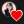

클론코딩 유튜브 사이트 따라 만들기(HTML+CSS 연습편, 웹 포트폴리오) | 프론트엔드 개발자 입문편: HTML, CSS, Javascript
유튜브 사이트를 반응형으로 만들어 볼꺼예요. 순수 HTML, CSS를 이용해서 (Javascript 약간) 만들어 보고, 다음에 Javascript를 배우면 동적으로 서버에서 데이터를
가져오는
연습을 더 해보도록 할께요.
우리 프론트엔드 개발자로 서서히 점점더 다가가고 있나요? ❤️ ⬇️ 아래 강의 자료 확인해보세요
⭐️ 강의 영상 즐겨찾기
0:0 ① 프로젝트 소개
2:08 ② 강의 활용 방법
2:53 ③ 활용한 드림코더(구독자분) 사례
3:24 ④힌트 및 반응형 구조 팁
7:06 ⑤ HTML 마크업 파트
18:57 ⑥ CSS로 이쁘게 스타일링
19:25 ✓CSS변수 활용법
25:57 ✓CSS 전처리기 깨알섦명
30:25 ✓ 모를때 검색하자!
34:03 ✓calc() 설명
44:34 ⑦ 미디어 쿼리 - 반응형
46:35 ⑧ 버튼을 클릭하면 빙글 돌아가기
49:15 ⑨ 엘리의 말말말
⭐️ Font Awesome Icons
(죄송, 태그는 여기 정보란에 입력이 금지되어져있어요)
fab fa-youtube
fas fa-search
fas fa-ellipsis-v
fas fa-caret-down
fas fa-thumbs-up
fas fa-thumbs-down
fas fa-share
fas fa-plus
fab fa-font-awesome-flag
⭐️ Useful Sites
MDN Html Elements Reference:
https://developer.mozilla.org/en-US/docs/Web/HTML/Element
Color Tool:
https://material.io/resources/color/#!/?view.left=0&view.right=0
Font Awesome:
https://fontawesome.com/
Google Fonts:
https://fonts.google.com/
🌐 프론트엔드 개발자 되기 입문자편 영상 목록:
https://www.youtube.com/playlist?list=PLv2d7VI9OotQ1F92Jp9Ce7ovHEsuRQB3Y
💰개발자 경력 관리 영상 목록:
📄 이력서 작성 방법
https://www.youtube.com/playlist?list=PLv2d7VI9OotTZfvF0s8Vs0gpRtodlTsgg
📈 IT 트렌드
https://www.youtube.com/playlist?list=PLv2d7VI9OotRTfM1zJLQMCLriBpLFg8r-
📷 개발자 브이로그
https://www.youtube.com/playlist?list=PLv2d7VI9OotR1tALnxov7sAUshyBmfYfU
🤗 생산력 향상 팁
https://www.youtube.com/playlist?list=PLv2d7VI9OotQB-9p29xrAnARhuE1Vf88I
🎵Music
Joakim Karud - Dreams
https://soundcloud.com/joakimkarud
카테고리
과학기술
댓글 58개
정렬 기준드림코딩 by 엘리님이 고정함
드림코딩 by 엘리 1주 전(수정됨)50분 영상 현실인가요? 😅 길지만 끝까지 다~ 봐주실꺼죠? 🙏🏼 (하.지.만. 1시간 안에 우리가 멋진 정적인 유튜브 웹사이트를 만든다는것!) 강의관련 사이트나 자료는 동영상 정보란에서 확인해 주세요 :)
7  답글알람 뜨자마자 왔어요! 선댓글 후감상 입니다! 감사합니다!!
2 답글